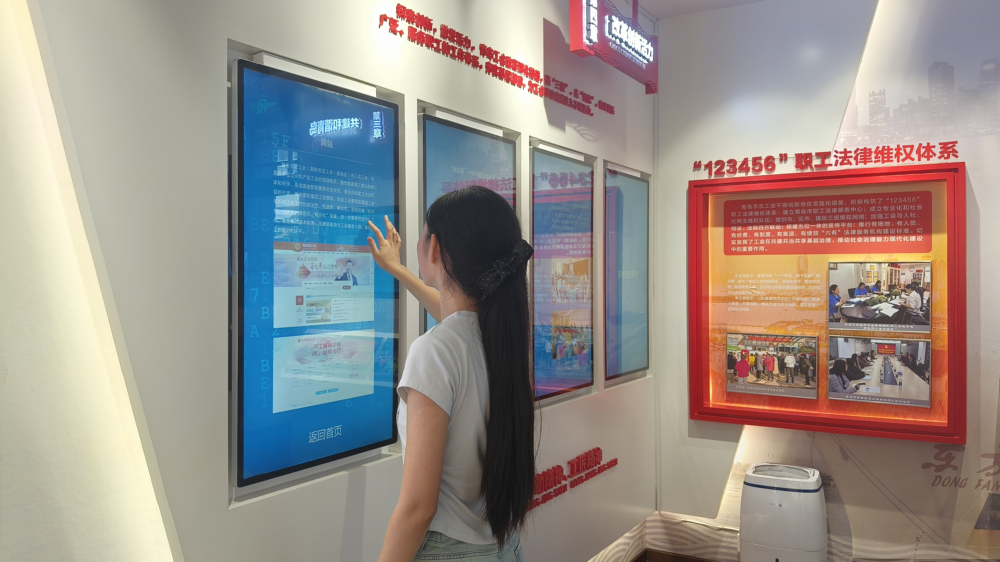

🏛 青岛工运纪念馆
纪念馆概况
四大展厅
红色人物
荣誉墙
团队介绍
知识答题
结语
纪念馆概况
青岛红色新地标
青岛工人运动纪念馆是山东省首个以工人运动为主题的纪念馆。
纪念馆位于青岛市市南区香港西路33号，坐落在八大关建筑群中。
展馆由青岛市总工会兴办， 2021年4月29日正式开馆。
“时代力量、走在前列”
300㎡
展陈空间
3万+
史料文字
300+
历史图片
50+
珍贵实物
馆内运用地幕、多点触控、 体感互动等现代展示技术， 让历史从文字走向沉浸体验。
建筑的记忆
从历史建筑到红色殿堂

民国时期
建筑最初为宋子文私人别墅之一， 是八大关近代建筑群的重要组成部分。
新中国成立后
曾作为全国总工会疗休养事业处办公地点， 见证工人事业发展。
2021年
经过活化创新利用， 建筑成为青岛工人运动纪念馆。
进入四大主题展厅